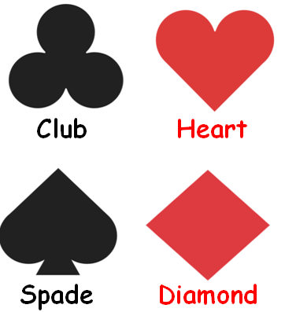

2.1 Introduction to Probability
2.1.1 Important concepts
- Trial
- Experiment
- Random experiment
- Sample space
- event
2.1.2 Three Definitions
2.1.2.1 Classical
\(P (A) = \frac{n(A)}{n(S)}\)
2.1.2.2 Relative frequency
\[\lim_{n(S) \to \infty} \frac{n(A)}{n(S)}\]
2.1.2.3 Axiomatic
Three axioms
Say, S is sample space and A is an event
- \(0 \le P (A) \le 1\) (NOT \(P(A) \ge 0\))
- At least one of S will occur. P (S) = 1; Certain event.
- \(P(A_1 U A_2 U ... U A_n)=P(A_1) + P(A_2) + ... + P(A_n)\) or
- \[P\left(\cup _{i=1}^{\infty }E_{i}\right)=\sum _{i=1}^{\infty }P(E_{i})\]
2.1.3 Permutaion vs Combination
There are 15 cricketers in BD preliminary team. We got to select 11. C or P?
- Where is P used?
2.1.4 Dependency and Mutual Exclusivity
If two events \(A\) and \(B\) do not affect each other, they are called independent events.
Let,
Event \(A\) = Head appears when a coin is tossed
Event \(B\) = Head appears when the coin is tossed again
These two events are independent, assuming the first toss does not alter the properties of the coin.
Consider another set of two events:
\(A\) = An ace appears when a card is drawn from a deck of 52 cards
\(B\) = An ace appears if another card is drawn from the same deck, without putting the first card back.
In this case the \(P(B)\) will depend on A.
Clearly, \(P(A) = \frac 1 {52}\), but \(P(B) = \frac 1 {51}\)
If event \(A\) did not happen, \(P(B)\) would be \(\frac 1 {52}\), so it turns out \(B\) depends on \(A\).
Theoretically speaking, dependent events are described the Bayes Theorem. If the event A depends on B, the the probability that A would happen if B happens is:
\(P(A|B) = \frac{P(A \cap B)}{P(B)}\)
\(\Rightarrow P(A \cap B) = P(A|B) \times P(B)\)
Now, if A does not really depend on B, then \(P(A|B) = P(A)\), i.e. \(A\) does not really care about \(B\).
Thus, if A and B are independent, \(P(A \cap B) = P(A) \times P(B)\)
Now, two events are called mutually exclusive when occurrence of one prevents other from happening.
If a die is thrown once one of 1-6 will face up. If 1 appears, 2, or any other number from the rest cannot appear. Thus, Getting these numbers are mutually exclusive or disjoint events. Mutually exclusive sets do not have any common elements between themselves.
Now, merging the concepts of dependency and mutual exclusivity is tricky.
Events cannot be independent and mutually exclusive simultaneously, although the opposite seems intuitive.
Common sense tells us events which are mutually exclusive should be independent, but common sense is mistaken here.
Consider throwing a die.
\(S = \{1, 2, 3, 4, 5, 6\}\)
Let, \(A = \{1, 3, 5\}\) and \(B = \{2, 4, 6\}\)
There are no common elements, so events A and B are disjoint or mutually exclusive.
It might seem, since the sets A and B have no common elemts, they are independent.
Let us check mathematically:
From the given information, \(P(A)= \frac 1 2, P(B) = \frac 1 2\)
\(P(A \cap B) = 0\) (since there are no common elements)
Mathematically,
\(P(A|B) = \frac{P(A \cap B)}{P(B)} = \frac 0 {\frac 1 2} = 0\)
And \(P(A) \cdot P(B) = \frac 1 2 \cdot \frac 1 2 = \frac 1 4\)
\(\therefore P(A \cap B) \ne P(A) \cdot P(B)\), which proves event \(A\) and event \(B\) are not independent, a result which is counterintuitive. Upon second thought, however, it becomes intuitive. First note that \(A\) and \(B\) both belong to \(S\). That they disjoint means one cannot happen if the other happens, which means one is preventing another from happening, a behavior which can explained as dependency: one event care about the other, i.e, if one happens, another refrains from happening.
Now, let us see another example, where we have two non mutually exclusive sets.
Let, \(A = \{1, 3, 5\}\) and \(B = \{1, 3, 4, 6\}\) (observe that there are some common elements)
\(P(A) = \frac 1 2, P(B) = \frac 4 6 = \frac 2 3\)
\(P(A \cap B) = \frac 2 6 = \frac 1 3\), and \(P(A) \cdot P(B) = \frac 1 2 \cdot \frac 2 3 = \frac 1 3\)
\(\therefore P(A \cap B) = P(A) \cdot P(B)\), which proves A and B are independent.
Using Bayes theorem,
\(P(A|B) = \frac{P(A \cap B)}{P(B)} = \frac{\frac 1 3}{\frac 2 3} = \frac 1 2 = P(A)\)
\(\therefore P(A|B) = P(A)\), which means \(A\) does not what happens to \(B\).
Thus, if A and B have common elements, they may be independent of each other. But are they always? No, because it may happen that \(P(A \cap B) \ne P(A) \cdot P(B)\), in which case they are dependent events.
So we have three possible cases when we combine depend with disjointness:
- If two events have no common sample points (elements) (mutually exclusive or disjoint), they are always dependent events.
- If two sets have some common sample points, they may be dependent or independent.
- Independet if \(P(A \cap B) = P(A) \cdot P(B)\)
- Dependet if \(P(A \cap B) \ne P(A) \cdot P(B)\)
Now, let us prove the relationship theoretically.
Let \(P(A) \ne 0, P(B\ne 0\)
If \(A\) and \(B\) are independent, \(P(A \cap B) = P(A) \cdot P(B)\)
Since \(P(A)\) and \(P(B)\) are both non-zero numbers, \(P(A) \cdot P(B) \ne 0\)
\(\therefore P(A \cap B) \ne 0\) , i.e, there are some common elements between the sets.
Thus, independent events cannot be mutually exclusive, i.e, they would always have common elements.
Finally, in general, we can say: Mutually exclsuive events are dependent events, while non mutually exclusive events may or may not be dependent.
In other word, all mutually exclsuive events are dependent events, but not all dependent events are mutually exclusive.
2.1.5 Types of Problems
- Miscellaneous
- Coin
- Die
- Playing Card
- At Once vs One by One
- Box
- Conditional
- Set Theoretic
- Digit
2.1.6 Miscellaneous
2.1.6.1 Misc Problem #01
What is the probability that in a leap year, there are 53 Fridays?
- In a leap year, there are 366 days, i.e, 52 weeks and 2 days. In each week is a Fridays, so there are no less than 52 Fridays. The remaining two days could be:
- (Sat, Sun); (Sun, Mon); (Mon, Tue); (Tue, Wedn); (Wedn, Thu); (Thu, Fri); (Fri, Sat) = 7
- Total possible outcome = 7 and favorable outcomes = 2
- \(P = \frac{2}{7}\)
2.1.6.2 Misc Problem #02
Out of the natural numbers 10 through 30, a number is chosen randomly; what is the probability that the number is
- a prime number
- a prime number or multiple of 5
- a prime number or an odd number
- not a perfect square
2.1.6.3 Misc Problem #03
What is the probability that the product of three positive integers chosen from 1 through 100 is an even number?
- Three possible cases
- All three are even
- Two odd and one even number
- Two even and one odd
- \(P=\frac{^{50}C_3}{^{100}C_3}+...\)
- 0.88
2.1.7 Coin And Die Problem
2.1.7.1 Tossing A Coing Twice
| First Coin | |||
|---|---|---|---|
| H | T | ||
|
Second Coin |
H | HH | HT |
| T | TH | TT | |
Tossing a coin twice is equivalent to tossing two coins at once
What is the probability that
- The Head appears at the first draw?
- At least one Head appears?
- Less than two Heads appear?
- Only Tails appears?
2.1.7.2 Flipping A Coin Thrice
| First Two Flips | |||||
|---|---|---|---|---|---|
| HH | HT | TH | TT | ||
| Third Flip | H | HHH | HHT | HTH | HTT |
| T | THH | THT | TTH | TTT | |
What is the probability that
- All three are Heads?
- There are more than one Head?
- The second draw gives a Head?
- The third draw does not give a head?
- The first draw gives a Tail but the the Draw does not?
- At most one Head appears?
2.1.7.3 Flinging Two Dice at Once
|
Tossing Two Dice at Once |
First Die | ||||||
|---|---|---|---|---|---|---|---|
| 1 | 2 | 3 | 4 | 5 | 6 | ||
|
Second Die |
1 | 1,1 | 1,2 | 1,3 | 1,4 | 1,5 | 1,6 |
| 2 | 2,1 | 2,2 | 2,3 | 2,4 | 2,5 | 2,6 | |
| 3 | 3,1 | 3,2 | 3,3 | 3,4 | 3,5 | 3,6 | |
| 4 | 4,1 | 4,2 | 4,3 | 4,4 | 4,5 | 4,6 | |
| 5 | 5,1 | 5,2 | 5,3 | 5,4 | 5,5 | 5,6 | |
| 6 | 6,1 | 6,2 | 6,3 | 6,4 | 6,5 | 6,6 | |
What is the probability that
- The first numbers is odd?
- The summation of numbers in two draws is a prime number?
- Both numbers are same?
- The second number is bigger?
2.1.8 Playing Card
2.1.8.1 Concepts (Playing Card)

Each rank has 13 cards.
- Ace (A)
- King (K)
- Queen (Q)
- Jack (J)
- Numbers: 2, 3, 4, 5, 6, 7, 8, 9, 10
- 4+9 numbers = 13 cards.
2.1.8.2 Card Problem #01
3 cards are drawn from a pack of 52 cards. What is the probability that they are all Kings?
There are 4 Kings. We’ve to draw 3 cards.
- \(P(K) =\frac{^4C_3}{{^52}C_3}\)
2.1.8.3 Card Problem #02
If a card is drawn from a deck of 52 cards with 4 aces, what is the probability that an ace will not show up?
Let, P(A) = Ace appears
- \(1-P(A)\)
- \(1-\frac 1 {13}\)
2.1.8.4 Card Problem #03
Two cards are drawn with replacement; What is the probability that they are
- Kings of same color
- Kings of different color
- Not Kings at all
- \(P(BUR) =P(B)+P(R)\)
- \(\frac{^2C_1 \times ^2C_1}{^{52}C_1\times ^{52}C_1}+\frac{^2C_1 \times ^2C_1}{^{52}C_1\times ^{52}C_1}\) Why not \(^{52}C_2\), \(^4C_2\)
- \(1-P(B \cup R)\)
- \(P(K)= \frac{^4C_1 \times ^4C_1}{^{52}C_1\times ^{52}C_1}\)
- \(1-P(K)\)
2.1.8.5 Card Problem #04
A card is drawn from a pack of 52 cards. What is the probability that it is
- an Ace
- A Spade
- A Hearts or a King
2.1.8.6 Card Problem #05
2.1.9 Box
2.1.9.1 Box Problem #01
In a box, there are 5 blue marbles, 7 green marbles, and 8 yellow marbles. If two marbles are randomly selected, what is the probability that both will be green or yellow, if taken
with replacement
without replacement
- Correct or not: \(\frac{^7C_2}{^{20}C_2}+\frac{^8C_2}{^{20}C_2}\)
- \(\frac{^7C_1 \times ^7C_1}{^{20}C_1 \times ^{20}C_1}+\frac{^8C_1 \times ^8C_1}{^{20}C_1 \times ^{20}C_1}\)
- Without replacement: \(\frac{^7C_1 \times ^6C_1}{^{20}C_1 \times ^{20}C_1}+\frac{^8C_1 \times ^7C_1}{^{20}C_1 \times ^{20}C_1}\)
2.1.9.2 Box Problem #02
There are some balls in a box as below
| Color | # Balls |
|---|---|
| White | 3 |
| Black | 6 |
| Red | 7 |
| Green | 5 |
| Yellow | 4 |
| Violet | 9 |
| Blue | 8 |
If three balls are drawn at random, what is the probability there are all red or green?
- \(\frac{^7C_3}{^{42}C_3}+\frac{^5C_3}{^{42}C_3}\)
- 0.039
2.1.9.3 Box Problem #02
There are 9 red and 7 white balls in a box. 6 balls are picked randomly. What is the probability that 3 balls are red and 3 balls are white?
Which one is the answer?
- \(\frac{^9C_3 \times ^7C_3}{^{16}C_6}\)
- \(\frac{^9C_3}{^{16}C_3} \times \frac{^7C_3}{^{16}C_3}\)
- \(\frac{^9C_3}{^{16}C_3} + \frac{^7C_3}{^{16}C_3}\)
- \(\frac{^9C_3}{^{16}C_6} \times \frac{^7C_3}{^{16}C_6}\)
- Whatever we draw together will be in \(r\) in \(^nC_r\)
- Answer: \(\frac{^9C_3 \times ^7C_3}{^{16}C_6}\)=0.367
2.1.10 Conditional Probability
2.1.10.1 Conditional Formula
Bayes Theorem
\(P(B|A)=\frac{P(A \cap B)}{P(A)}\)
2.1.10.2 Conditional Problem # 01
Probability that it rains today is 40%, that tomorrow is 50%, and that on both days is 30%. If it rains today, what is the probability that it would rain tomorrow?
- \(P (T) = 0.4, P(M) = 0.5, P(T\cap M)=0.3\)
- \(P(M|T)=?\)
- \(P(M|T)=\frac{P(T\cap M)}{P(T)}\)
- \(\frac{0.3}{0.4}\)
2.1.10.3 Conditional Problem # 02
In a college, there are 100 students, of whom 30 play football, 40 play cricket, and 20 play both. A student is selected randomly. If he plays cricket, what is the probability that he plays football?
\(P(F)=0.3\)
\(P(C)=0.4\)
\(P(F \cap C)=0.2\)
\(P(F|C)=?\)
- \(P(F|C)=\frac{P(F \cap C)}{P(C)}=\) 0.5
2.1.10.4 Conditional Problem # 03
\(S=\) {1, 2, 3, 4, 5, 6, 7, 8, 9, 10}
If a number is picked randomly and known it an even number, What is the probability that it is more than 6?
2.1.10.5 Conditional Problem # 04
In a city of 1 million inhabitants let there be 100 terrorists and 999,900 non-terrorists. The city has a facial recognition software. If the camera scans a terrorist, a bell will ring 99% of the time, and it will fail to ring 1% of the time. If the camera scans a non-terrorist, a bell will not ring 99% of the time, but it will ring 1% of the time.
If the bell rings, what is the probability that a terrorist is caught?
About 99 of the 100 terrorists will trigger the alarm—and so will about 9,999 of the 999,900 non-terrorists. Therefore, about 10,098 people will trigger the alarm, among which about 99 will be terrorists. So, the probability that a person triggering the alarm actually is a terrorist, is only about 99 in 10,098, which is less than 1%
2.1.11 Set Theoretic
2.1.11.1 Concept
Formulae

Think Why are they so?
- \(P(A\cap B)=P(A)\times P(B)\), if A & B are independent (prove from Bayes theorem)
- \(P(A\cup B)=P(A)+P(B)-P(A\cap B)\)
- \(P(A\cap \bar B)=P(A)-P(A\cap B)\)
- \(P(A|\bar B)=\frac{P(A \cap \bar B)}{P(\bar B)}=?\)
- Also recall De Morgan’s Laws
2.1.11.2 Set Problem # 01
The probability of Ronaldo scoring a goal is 0.4 and that of Messi 0.38. What is the probability that- Both Score
- Only Ronaldo scores
- Only Messi scores?
- At least one of them scores
- Only one of them scores
- At most one of them scores
P(R) = 0.4 and P(M) = 0.38
- \(P(R \cap M)=P(R) \times P(M)\) (since independent)
- \(P(R \cap M')=?\)
- \(P(R' \cap M)=?\)
- \(P(R \cup M)\)
- \(P(R \cap M')+P(R' \cap M)\)
- Same to 5
2.1.11.3 Set Problem # 02
\(S_1\)={1,3,4,7,9,20}
\(S_2\)={12, 13, 14, 15, 16, 17, 18}
If a number is randomly chosen from each set, what is the probability that a prime number comes from \(S_1\) and a multiple of 3 from \(S_2\)?
Say, P = Prime from \(S_1\)
M = Multiple of 3 from \(S_2\).
\(P(P) = \frac 3 7\) and \(P(M)=\frac 3 7\)
What do we need to find out?
- \(P(P \cup M)\)
- \(P(P \cap M)\)
- Answer: \(P(P \cap M) = P(P) \cdot P(M)\)
2.1.11.4 Set Problem # 03
Cup 01 contains 2 black, 3 red, and 1 pink ball. Cup 2 contains only 1 red ball. A cup is selected randomly. Next, a ball is randomly chosen from that randomly selected cup and placed into the other cup. A ball is then drawn randomly from that second cup. Find the probability that the last ball drawn is a pink one.
- 3 possible cases
- 1st cup \(\rightarrow\) pink ball \(\rightarrow\) pink ball from 2nd cup
- 1st cup \(\rightarrow\) non-pink ball \(\rightarrow\) pink ball from 2nd cup
- 2nd cup \(\rightarrow\) red ball \(\rightarrow\) pink ball from 1st (other) cup
- \((\frac 1 2 \times \frac 1 6 \times \frac 1 2 )+ (\frac 1 2 \times \frac 5 6 \times 0) + (\frac 1 2 \times 1 \times \frac 1 7)\)
2.1.11.5 Set problem # 04
If a senility researcher discovered that in a population of healthy and diseased elderly people, 14% of the people had senile dementia, 63% had arterioplerotic cerebral degeneration, and 11% had both. What is the probability that a person not having arterioplerotic cerebral degeneration has senile dementia?
2.1.11.6 Set problem # 05
A candidate applied for three posts in an industry, having 3, 4, and 2 candidates respectively. What is the probability of getting a job by that candidate in at least one post?
\(P(F)+P(S)+P(T)-P(F\cap S)-P(S\cap T)-P(F\cap T)+P(F\cap S \cap T\)
2.1.11.7 Set problem # 06
A card is drawn from each of two well-shuffled pack of cards. Find the probability that at least one of them is an ace.
Let,
A = Ace from 1st pack
B = Ace from 2nd pack
\(P(A \cup B)=?\)
\(P(A) = \frac{^4C_1}{^{52}C_1}\)
\(P(B) = P(A)\)
\(P(A\cap B) = P(A) \times P(B)\)
- \(P(A \cup B)=P(A)+P(B) - P(A \cap B)\)
2.1.11.8 Set problem # 07
\(P(A\cap B)= \frac 1 3, P(A \cup B) = \frac 5 6, and \space P(A) = \frac 1 2\)
Find \(P(B)\) and \(P(B^c)\)
2.1.11.9 Set problem # 08
\(P(A)= \frac 1 2, P(B) = \frac 1 5, \text{and} \space P(A|B) = \frac 3 8\)
Find \(P(A \cap B), P(B|A)\), and \(P(A \cup B)\)
\(P(B|A) = \frac {P(A \cap B)}{P(A)}\)
\(P(A|B) = \frac {P(A \cap B)}{P(B)}\)
\(P(A \cap B) = P(A|B) \times P(B)\)
\(\therefore P(B|A) = \frac{P(A|B) \times P(B)}{P(A)}\)